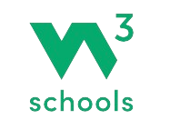
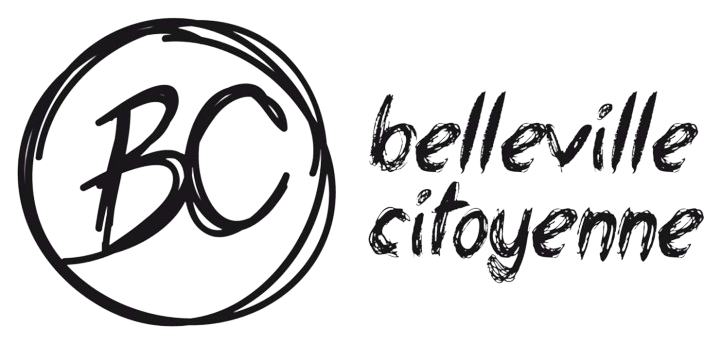
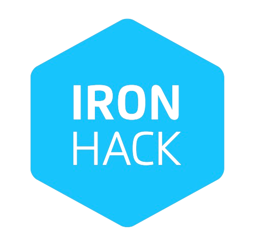

Developpeuse Web en devenir
A la recherche de challenge je suis en reconversion pour devenir devenir Développeuse Web ! Suite à une première formation accompagnée et de l'autoformation via les cours du site W3Schools, je souhaite à présent clotûrer ma reconversion grâce à un diplôme. C'est avec cet objectif que j'ai rejoint l'école Iron Hack pour un Titre Professionnel Bac+3 à partir de Mars 2024. Je suis donc à la recherche d'une alternance d'un an sur le rythme de 3 mois en école (pour être opérationnel dans le métier) suivi de 9 mois en immersion complète en entreprise. J'ai donc hâte de pouvoir commencer avec vous cette nouvelle aventure professionnelle.
-
Formations Universitaires et autodidactes
Grâce à une spécialité informatique avancé à l'université, j'ai pu grâce aux cours et de l'apprentissage en autodidacte commencer à faire un premier site vitrine. Une petite passion était née à l'époque. Je l'avais alors laissée de côté afin de me concentrer pour mes études. Aujourd'hui en reconversion, la passion est vite revenue et me donne la curiosité nécessaire pour me former en autodidacte grâce aux cours de W3School. Tout d'abord dans l'approfondissement du JS vanilla puis en m'attaquant au backend et aux autres langages du FrontEnd. Vous pouvez suivre l'avancée de mon apprentissage via mes réalisations sur la page projets.
-
Formation Belleville Citoyenne
En janvier 2024, grâce aux deux semaines de Modul'R, j'ai acquis les connaissances de base en HTML et en CSS. C'est grâce à cette formation que ce site CV à commencer à naître. Nous avons également été initilisé au JavaScript et au responsive design. En étant encadrée, j'ai obtenu des bases solides à partir desquels je peux continuer à m'autoformer et à monter des projets.
-
Formation qualifiante IronHack
Belle avancée dans le projet ! Admise à l'école IronHack pour une rentrée fin Mars 2024, cette formation me permettra d'approfondir mes connaissances et me professionaliser. Grâce à son format adapté aux reconversions professionnelles, 3 mois de cours Fullstack sont au programme suivi de 9 mois en immersion complète dans une chouette entreprise. Pourquoi pas avec vous ?
FORMATION
EXPÉRIENCES
-
Chargée de projets
Animation d'ateliers d'initiation à l'informatique | Communication supports, interne et évènementielle | Management la communauté bénévole - Recrutement, animation, autonomisation et valorisation
Soft Skills
Animation groupe, Prise de responsabilités, Travail en équipes
-
Community Manager - Lisbonne
Planifier et créer des contenus de communication - community management (Instagram, Facebook) | Appuyer l'organisation des réunions d'équipes | Construire et animer des ateliers d'éducation non-formelle | Animer et soutenir le centre de jeunes
Soft Skills
Anglais (C1), Adaptation à un nouvel environnement de travail
-
Assistante de Direction
Gérer l'administratif des examens, stages et commandes | Gérer des projets "inclusifs" d'aménagement de l'espace | Faire de la médiation entre le personnel pédagogique et la direction - Répondre à leurs problématiques | Créer et animer la page LinkedIn du lycée | Garantir la cohésion et la convivialité au sein de l'équipe
Soft Skills
Organisation du travail, Résolution de problèmes
-
Dev Web
Future Dévoloppeuse Web Fullstack, pourquoi pas avec vous ?
Soft Skills
Toujours le sourire
Dessin Vectoriel
Photographie
Jardinage
Composition et Musique